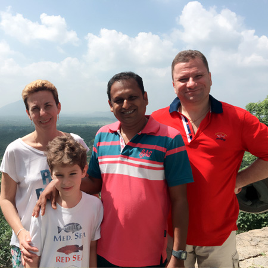
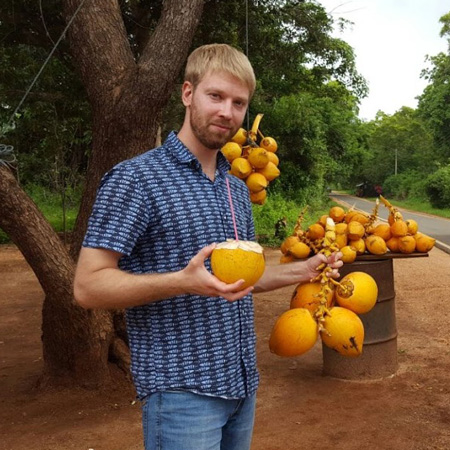

Useful Travel Tips
Holiday in Sri Lanka has become everyones dream since a Sri Lanka holiday is the answer to both your mental and physical fatigue. Refresh your self with a great holiday in Sri Lanka. A Sri Lanka holiday will always leave you more than being just satisfied. Pleasure , answers to your curiosity splendid Beaches, Adventure, Nature and Culture are some of the things one experiences on a holiday in Sri Lanka. To holiday in Sri Lanka could be the greatest experience in your life. It's affordable, its worth it have holiday in Sri Lanka. Here are a few points to remember when touring Sri Lanka.
MONEY AND ENCASHMENTS
In encashment of foreign currency or traveler's cheques, using the services of banks or authorized moneychangers is recommended for a better deal and reliability. Credit Cards payments by Master, Visa and American Express are accepted in most places including Hotels.
DRINKING WATER
You are advised to avoid consuming water directly off taps or that which is not sterilized. Sealed bottled water is available in every part of the Island and in purchasing such water pay attention to seal and date of expiry.
FOODS
Don't hesitate to eat any food served in Hotels of Tourist Restaurants, as they are always fresh and safe. Enjoy the Seafood on Beach Resorts and any other specialty each place has to offer. Consult your tour Guide when choosing a wayside restaurant at Random.
DRESS
Please be informed that in entering Buddhists temples both males and females are expected to be dressed modestly. The Garments should cover well bellow the knees. T-shirts without sleeves and Skinnines are not permitted.You are expected to have your shoulders and upper arm covered. You are also expected to take off shoes and caps when entering Shrine and Temples.
While on tour you can were anything you please. Light Cotton casual wear is recommended. In Nuwara Eliya light warm clothes may be required. Top less of nude bathing and Sun bathing is strictly prohibited.
TRANSPORT
We advice you to use private Transport for convenience and comfort but we will not discourage in using public transport if you are a free traveler on a budget.
A train ride in the hill country, as a part of your tour could be an exciting and adventurous experience.
SHOPPING
Shopping could be done in reputed places recommended by Travel Agents. Some of them are Silk Garden,Maithree Batiks,Odel, House of fashion, Cotton Collection, Paradise Road etc.
We would also encourage you to purchase off stalls and shop in Tourist are as these items are produced as cottage industries or cooperative systems where the proceeds go direct to the self employed persons
“
Yuri
June 2015
Australia

“
Alexey
November 2016
Russia

“
Elena
July 2017
Russia

“
Yuliya
Jan 2018
America

“
Igor Antonov
March 2018
Russia

.png)